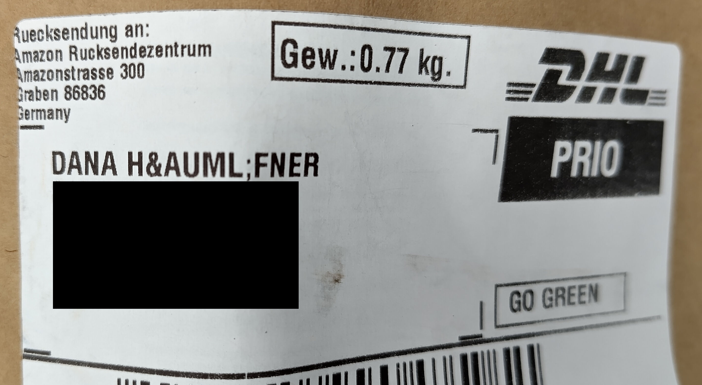

HTML
Hypertext Markup Language
HTML - Mindmap
HTML - Hypertext Markup Language
Hypertext - Übertext
- Text mit Querverweisen zur Bildung einer netzartigen Struktur
- Vergleichbar mit Inhaltsverzeichnissen aus Büchern
HTML - Hypertext Markup Language
Markup Language - Auszeichnungssprache
HTML - Hypertext Markup Language
Markup Language - Auszeichnungssprache
- Darstellung von Inhalt eines Dokumentes erweitert um die Information, wie der Text strukturiert ist
- Ursprünglich: Angaben für den Setzer im "Drucksatz"
Historie - Steinzeit
- 1945: "As We May Think" - Ein Artikel über ein Gerät mit dem Namen Memex
[...] an electromechanical device enabling individuals to develop and read a large self-contained research library, create and follow associative trails of links [...]
—Vannevar Bush, As We May Think
Historie - Bronzezeit
- 1989 (Anfang): Tim Berners-Lee schreibt seine ersten Vorschläge für ein World Wide Web
Beschreibung eines "web"s mit "hypertext documents" die von "browsern" betrachtet werden
- 1990 (Ende): Erster Webserver und Browser für Demonstrationen
- 1993: Erste HTML-Spezifikation von der Internet Engineering Task Force (IETF)
Quelle: CERN: A short history of the Web
Historie - Eisenzeit
- 1995: HTML 2.0 als RFC 1866 veröffentlicht
- 1997: HTML 3.2 durch das World Wide Web Consortium (W3C, www.w3c.org) veröffentlicht
- 1997-2000: HTML 4.x mit "Strict", "Transitional" und "Frameset" veröffentlicht
- 2008: HTML 5 durch das WW3C veröffentlicht
Quelle: Wikipedia: HTML
Historie - Neuzeit
- 2014: HTML 5 veröffentlicht als W3C
Recommendation
- Verbesserte Unterstützung für Multimedia
- Viele neue semantische Tags (main, footer, ...)
- Verbesserte Unterstützung für Web-Anwendungen, z.B. Window- und Navigator-APIs
- 2019: HTML als "Living Standard": https://html.spec.whatwg.org/multipage/ veröffentlicht von der Web Hypertext Application Technology Working Group (WHATWG)
Markup - Auszeichnungen
- Angaben dazu, wie der Text strukturiert ist
- Überschriften
- Absätze
- Verweise (Links)
- Tabellen
- Zitate
- Blöcke
- Bilder
- ...
Tags - Elemente
- Struktur: <tagname></tagname>
- Öffnendes Tag: <tagname>
- Schließendes Tag: </tagname>
"geöffnete" Tags müssen bis auf wenige Ausnahmen geschlossen werden!
- Beispiel: <p>Mein Absatz</p>
- Ausnahme: <br> (Zeilenumbruch)
Tags - Inhalt
- <tagname>Inhalt</tagname>
<p>
Dies ist ein Beispiel für den Inhalt eines Paragraphs
<!-- Kind-Element -->
</p>
Empty Tags - Leere Auszeichnungen
- Dürfen keinen Inhalt haben
- Dürfen keinen schließendes Tag haben
Beispiele
- <hr> oder <hr/> (Horizontale Linie)
- <img> oder <img/> (Bild)
Englisch: "void elements" MDN
NICHT
- <hr></hr>
- <img></img>
Tag Attribute
- Struktur:
<tagname attribut1="value1" attribut2="value2"...></tagname> - Beispiel:
<p lang="en">This paragraph is marked as english</p>
- Für manche Attribute muss kein Wert angegeben werden. (Schlechter Stil)
- Anführungszeichen können in HTML entfallen, wenn der Wert nur aus einem Wort
besteht.
(Ganz schlechter Stil!!)
Tag Baumstruktur - Schachtelung
Tags können und müssen ineinader
verschachtelt werden!
Ein Tag, das in einem anderen Tag geöffnet wird muss geschlossen werden, bevor das erste Tag geschlossen werden kann.
- Richtig: <tag1><tag2></tag2></tag1>
- Falsch: <tag1><tag2></tag1></tag2>
HTML vs. XML
- Sehen sich sehr ähnlich, HTML ist aber weniger "strikt"
- Nicht alle geöffneten Tags müssen geschlossen werden
- Mögliches entfallen von Anführungszeichen bei Attributwerten (immernoch schlechter Stil!)
- Andere Dokumenttyp-Deklaration
- Groß- und Kleinschreibung in Tags
HTML - Hello World
./code-examples/01_hello-world/hello-world.html
Aufbau eines HTML-Dokuments
- Dokumenttyp-Deklaration
- HTML5: <!DOCTYPE html>
- Dokument (<html>) besteht aus:
- Kopfdaten: <head></head>
- Inhalt: <body></body>
HTML - Nur Text?
Absätze und Überschriften
- Absätze: <p></p>
- Beginnt mit einer neuen Zeile
- Standard: Abstand vor und nach dem Absatz.
- Überschriften: <h1></h1>...<h6></h6>
- Beginnt jeweils mit einer neuen Zeile
- <h1> nach <h6> semantisch Rangabsteigend
- Standard: Von <h1> nach <h6> wird die Schrift und die Abstände kleiner.
- Nur eine <h1> in einem Dokument
- Korrekte Schachtelung beachten:
z.B. auf eine <h2> muss <h3> folgen
HTML - Absätze und Überschriften
Fett, kursiv, hoch und tief
- Fett: <b></b> (bold)
- Text zwischen <b> und </b> wird fett ausgegeben
- Kursiv: <i></i> (italic)
- Text zwischen <i> und </i> wird kursiv ausgegeben
- Hochstellung: <sup></sup> (superscript)
- Text zwischen <sup> und </sup> wird hochgestellt
- Tiefstellung: <sub></sub> (subscript)
- Text zwischen <sub> und </sub> wird tiefgestellt
HTML - Fett, kursiv, hoch und tief
Zeilenumbruch
- Umbruch: <br> (line break)
HTML - Zeilenumbruch
Praxis - Aufgabe 0 - HTML
Texteditor - Empfehlungen
Browser
CLI-Texteditor: vim with ":syntax on"
Praxis - Aufgabe 0 - HTML
Online-Tools
- Dev-Env: Stackblitz.com
- Code-Snippets: Codepen.io
- Static File Hosting: Surge.sh
Praxis - Aufgabe 1 - CV
Schreiben Sie eine HTML-Seite auf der sie sich selbst darstellen (z.B. in Form eines Lebenslaufs). Verwenden Sie dazu Überschriften, Absätze und Textvorhebungen.
Tip: Syntax-Check: https://validator.w3.org/nu/
(Check by text input)
Tip: Erzeugung von Fließtext: http://www.loremipsum.de/
Lösung - Aufgabe 1 - CV
Code:
gitlab.com/.../TINF24B2/html/aufgaben/
01-cv/loesung.html
Deployed:
gitlab.io/.../TINF24B2/html/aufgaben/
01-cv/loesung.html
Broken-HTML:
gitlab.io/.../TINF24B2/html/aufgaben/
01-cv/loesung-broken.html
Bisherige Tags
- h1, h2, h3, h4, h5, h6
- p, br
- b, i
- sup, sub
Sind diese Tags alle gleichwertig?
Block- vs. Inline-Elemente
- Block-Elemente
- können Block- oder Inline-Elemente enthalten
- beginnt mit einer neuen Zeile davor und danach
- (üblicherweise) mit Abstand davor und danach
- bisher: h1 ... h6, p
- Inline-Elemente
- dürfen keine Blockelemente enthalten
- Kein (extra) Zeilenumbruch
- (üblicherweise) keine Abstände
- bisher: b, i, sup, sub, br
HTML - Block- vs. Inline-Elemente
HTML - Block- vs. Inline-Elemente
Tags und Attribute
- Tags können mit Attributen versehen werden
- <tagname attribut1="value1" attribut2="value2"></tagname>
- Beispiel: <p lang="fr"> ... </p>
Zugelassene Attribute sind abhänging vom Tag.
Einige Attribute sind global, also für alle Tags zulässig.
Wichtige Globale Attribute
- id - Eindeutiger Name des Elementes
- Wert: eindeutiger Name ohne Leerzeichen
- class - Zuordnung des Elements zu einer oder mehreren Gruppen
- Wert: unsortierte Liste von Namen
- lang - Sprache des Elementinhalts
- Wert: Sprachbezeichner (z.B. de, en, en-us, ...)
- title - Zusatzinformation ("advisory
information")
- Wert: beliebiger Text
- Taucht üblicherweise als Tooltip auf
- Wird an Unterelemente vererbt
Mehr Wichtige Globale Attribute
- dir - Schreibrichtung
- Wert: "ltr" (left to right), "rtl" (right to left), "auto"
- tabindex - Tabulator-Reihenfolge
- Wert: Zahl (ganzzahlig, aufsteigend)
- spellcheck - Rechtschreibprüfung
- Wert: "true" or "false"
- Browser entscheidet ob er es anwendet
(z.B. typischerweise nur editierbare Elemente)
- hidden - Verbergen eines Elements
- Wert: leer oder "hidden" (Case-Insensitiv)
- Markiert nicht (mehr) relevante Elemente
Mehr Wichtige Globale Attribute 2
- contenteditable - Editierbarkeit
- Wert: leer, "true", "false"
- Falls leer oder "true" kann Inhalt editiert werden
- translate - Übersetzbarkeit
- Wert: leer, "true", "false"
- Legt fest, ob der Inhalt übersetzt werden darf.
- Wird an Unterelemente vererbt
- data-* - anwendungsspezifische Daten
- Wert: beliebiger Text
- <span data-nummer="1234">Max Müller</span>
- Clientseitige Logik kann auf Werte zugreifen
Globale Attribute Drag&Drop
- draggable - mit der Maus ziehbar
- Wert: "true", "false"
- dropzone - Ablageort für ziehbare Elemente
- Wert: unsortierte Liste aus "copy", "move", "link", "string: [*]", "file: [*]"
- Achtung: in gängigen Browsern noch nicht unterstützt :(
- ondragover - Eventhandler
- Wert: JavaScript Funktion
- Unterstützung durch alle Browser
Globale Attribute CSS
- style - direkte Stilangabe
- Wert: CSS-Eigenschaften
Semantische Auszeichnung
<strong> & <b>
- Beide Tags sorgen für einen fettgedruckten Text
- Das b-Tag hat weniger semantisches gewicht
- Das b-Tag sollte z.B. verwendet werden für Stichwörter oder Produkt-Namen. Es soll Aufmerksamkeit auf sich ziehen ohne eine Notwendigkeit zu suggerieren.
- Das strong-Tag sollte wichtige Inhalte hervorheben oder dann verwendet werden wenn dringlichkeit Vermittelt werden soll.
Semantische Auszeichnung
- em – emphasis (Betonung)
- strong – "strong importance" (hohe Wichtigkeit)
- mark – marked (Markiert)
Optische Textauszeichnung
- i – italics (kursive Schrift)
- b – bold (Fettdruck)
- u – underline (Unterstrichen)
Betonung, hohe Wichtigkeit,
Markierung:
<em>semantische</em>
Auszeichnung
kursive Schrift,
Fettdruck:
<b>optische</b> Auszeichnung
Semantische Auszeichnung
Semantische Auszeichnung
Inline-Beispiele
- dfn – Begriffsdefinition
- Üblicherweise kursiv
- cite – Zitatangabe
- Üblicherweise kursiv
- abbr – Abkürzung oder Akronym
- Üblicherweise keine besondere Formatierung
- time – Zeitangabe
- Attribut "datetime" für maschinenlesbare Form!
- code – Text der (Programmier)-Code darstellt
- Üblicherweise Schreibmaschinenschrift
Semantische Auszeichnung
Block-Beispiele
- hr – Thematischer Wechsel
- Üblicherweise eine horizontale Linie
- pre – Vorfomartierter Text
- Stellt auch Leerzeichen, Zeilen und Umbrüche dar
- Üblicherweise Schreibmaschinenschrift
- blockquote – Zitat auf Absatzebene
- Üblicherweise beidseitig eingerückt, z.B. Memex
- figure – "Abbildung"
- in sich geschlossener, vom Text getrennter Inhalt
- optionale Unterschrift: <figcaption>
Semantische Auszeichnung
Block-Beispiele
- article – Artikel
- Abgeschlossener, unabhängiger Inhalt
- section – Abschnitt
- Thematisch zusammengehöriger Teil mit Überschrift
- aside – Randbemerkung
- header/main/footer – einleitender-, haupt-, abschließender Teil
- nav – Navigation
- address – Kontaktinformation
- Kontakt zum Inhalteersteller!!
Screen Reader
Accessibility (a11y) oft Teil der nicht-funktionalen Anforderungen
und
Screen-Reader unterstützung ist ein Teil davon
Essentielles Werkzeug um sehbehinderten Menschen Zugang zu ermöglichen
Leben von der semantischen Auszeichnung und korrekten Beschreibung von Inhalten
Screen Reader
Screen Reader
Good-Semantics
Bad-Semantics
Good-Semantics
MacOS-VoiceOver:
You are currently on a heading level 1,
inside web content
[...]
Bad-Semantics
MacOS-VoiceOver:
You are currently on a text element,
inside web content [...]
a11y gone wrong

Sonderzeichen in HTML
Der verwendete Zeichensatz wird durch meta-Tag im Seitenkopf angegeben, z.B.:
"utf-8"
Ermöglicht: €$§²³
oder Umlaut äöüß
Aber: Wie stelle ich reservierte
Zeichen dar?
z.B. > oder <
Oder Zeichen die ich nicht einfach eingeben
kann?
z.B. ©♥™
Sonderzeichen in HTML
- Entity – Entität
- &#Code-Nummer; (Code-Nummer ist dezimal)
- &#xUTF8-Nummer; (UTF8-Nummer ist dezimal)
- &Name; (Name ist vordefiniert)
- Verpflichtende vordefinierte Entitäten
- Anführungszeichen " " oder "
- Kaufmanns-Und & & oder &
- Kleiner < < oder <
- Größer > > oder >
- Viele weitere Entitäten:
13.5 Named character references, z.B. © ©
Sonderzeichen in HTML
Leerzeichen in HTML
Problem: Multiple Leerzeichen werden ignoriert
Lösung: Entitäten!
Non-Breaking-Space
5,29 ·10-11 m
Thin-Space
g a p oder drei fach
Thick-Space
g a p oder drei fach
Leerzeichen in HTML
-
-  
-  
-  
-  
- ℋ ℋ
The hell is a "Hilbert space"
Hilbert space

Praxis - Aufgabe 2 - Pythagoras
Schreiben Sie den Satz des Pythagoras in HTML.
Praxis - Aufgabe 3 - Tags
Testen Sie die Wirkungen der Auszeichnungen auf den vorangegangenen Folien, z.B.: b, i, sup, sub,
br, hr, dfn, abbr, cite, time, samp, pre, blockquote, figure, article, section, aside,
header, footer, nav, address
Welche haben im Standard eine sichtbare Wirkung?
Unterscheidet sich die Darstellung in den Browsern?
Lösung - Aufgabe 2 - Pythagoras
Code: gitlab.com/.../TINF23B2/html/aufgaben/
02-pythagoras/loesung.html
Deployed: gitlab.io/.../TINF23B2/html/aufgaben/
02-pythagoras/loesung.html
Lösung - Aufgabe 3 - Tags
Code: gitlab.com/.../TINF23B2/html/aufgaben/
03-tags/loesung.html
Deployed: gitlab.io/.../TINF23B2/html/aufgaben/
03-tags/loesung.html
Unsortierte Liste
- ul – Unsortierte Liste (unordered list)
- Üblicherweise dargestellt mit einem Punkt
- li – Listen-Element (list element)
- Einzelnes Listen-Element
HTML - Unsortierte Liste
Sortierte Liste
- ol – sortierte Liste (ordered list)
- Üblicherweise dargestellt mit arabischen Zahlen
Kann durch Attribute eingestellt werden!
- reversed – Zählung umdrehen
- Wert: leer oder "reversed"
- start – Startwert der Nummerierung
- Wert: ganze Zahl
- type – Typ des Zählers
- Wert: "1", "a", "A", "i", "I"
HTML Sortierte Liste
HTML Sortierte Liste
Geschachtelte Liste
Listen - Definitionsliste
- dl – Definitionsliste (definition list)
- Stellt Name und Beschreibung üblicherweise eingerückt dar
- dt – Definitionsname (definition term)
- zu definierender Begriff
- dd – Definition (description details)
- die Definition selbst
Listen - Definitionsliste
HTML Tabellen
DO
strukturierte und große Datenmengen Anzeigen
DON'T
Seitenaufbau (Header, Footer, Content) realisieren
HTML Tabellen
- table – Tabelle
- Umfasst die gesamte Tabelle
- tr – Tabellenzeile (table row)
- deklariert eine neue Zeile
- td – Tabelleninhalt (table data)
- Definiert den Inhalt eine Zelle
HTML Tabellen
HTML Tabellen
Mehr Tags innerhalb des table-Element:
- caption – Überschrift (Legende)
- Üblicherweise über der Tabelle dargestellt
- th – Spalten/Zeilen-Überschrift (table header)
- "scope" Attribut mit Wert "row" oder "col"
- colgroup – Spaltenanzahl festlegen (columns)
- Definiert die Anzahl vorhandener Spalten
- col – Spalte (column), empty tag
- "span" Attribut mit Wert ganze Zahl größer 0
Spalten, Unter- und Überschrift
Spalten, Unter- und Überschrift - Code
Zellen zusammenfassen
Attribute für td-Elemente:
- colspan – Spalten zusammenfassen
- Wert: ganze Zahl größer 0
- rowspan – Zeilen zusammenfassen
- Wert: ganze Zahl größer 0
Zellen (zusammenfassen)
Zellen zusammenfassen
Tabelle Strukturierter
- thead – Kopfzeile
- tbody – Tabelleninhalt
- tfoot – Fußzeile
Tabelle Strukturierter
Last but not least
Tabellen lassen sich schachteln (wie Listen)
Praxis - Aufgabe 4 - Liste
Erstellen Sie eine Liste mit 5 Einträgen. Diese sollen in römischer Darstellung abwärts ab 50 gezählt werden.
Praxis - Aufgabe 5 - Listen
Erstellen Sie eine Liste mit 3 Listen-Ebenen
- Die erste Ebene hat 3 Einträge und ist ungeordnet.
- Der erste Eintrag der ersten Ebene ist eine Liste mit 3 Einträgen geordnet nach kleiner römischer zählweise aufwärts beginnen mit "ii"
- Der zweite Eintrag der ersten Ebene besteht aus einer ungeordneten Liste mit 2 Einträgen.
- Der dritte Eintrag der ersten Ebene besteht aus einer geordneten Liste gezählt mit Kleinbuchstaben, dessen erster Eintrag wiederum eine Definitionsliste mit 3 Einträgen enthält.
Praxis - Aufgabe 6 - Tabelle
Wie lautet der Code für die unten angezeigte Tabelle? (Tipp: Tabellen lassen sich Schachteln wie Listen)

Zusatzfrage: Was passiert, wenn die Anzahl der Zellen einer Zeile nicht der Anzahl der Spalten der Tabelle entspricht (mehr/weniger)?
Lösung - Aufgabe 4 - Liste
Code: gitlab.com/.../TINF23B2/html/aufgaben/
04-liste/loesung.html
Deployed: gitlab.io/.../TINF23B2/html/aufgaben/
04-liste/loesung.html
Lösung - Aufgabe 5 - Listen
Code: gitlab.com/.../TINF23B2/html/aufgaben/
05-listen/loesung.html
Deployed: gitlab.io/.../TINF23B2/html/aufgaben/
05-listen/loesung.html
Lösung - Aufgabe 6 - Tabelle
Code:
gitlab.com/.../TINF23B2/html/aufgaben/
06-tabelle/loesung.html
Deployed:
gitlab.io/.../TINF23B2/html/aufgaben/
06-tabelle/loesung.html